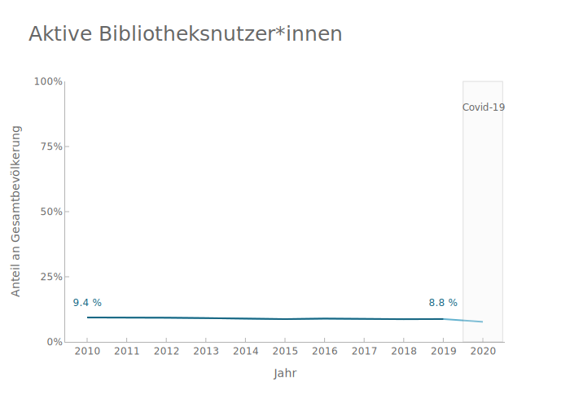
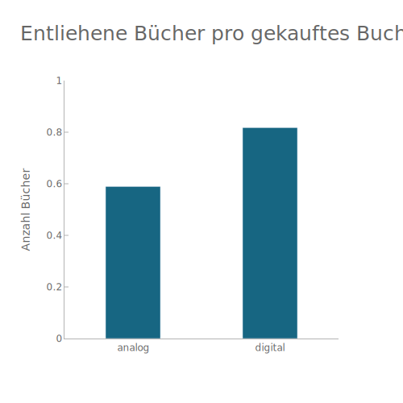

Daten explorieren¶
# colors
# neutral
light_grey = '#eeeeee'
grey = '#b3b3b3'
dark_grey = '#666666'
white = '#ffffff'
# reading habits
red = '#810a26'
dark_red = '#4c0a18'
light_red = '#b00e34'
# publishers
green = '#827C17'
light_green = '#979348'
# libraries
blue = '#176682'
light_blue = '#63B2CF'
dark_blue = '#10475b'
Grafiken erstellen¶
""" # import modules
import pandas as pd
import numpy as np
import plotly.graph_objects as go
import plotly.express as px """
print('_')
_
""" df = pd.read_csv('./data/ebooks_data.csv', delimiter=',', header=[0])
df['year'] = df['year'].astype(np.datetime64)
gfk_df_data = pd.read_csv('./data/gfk_data.csv', delimiter=',', header=[0]) """
print('_')
_
Wie viele aktive Bibliotheksnutzer*innen gibt es in Deutschland?¶
Diese Grafik wurde in der Präsentation nicht verwendet.

""" fig = go.Figure()
# lenders
fig.add_trace(go.Scatter(x=df['year.1'], y=df['perc_lenders'], name='aktive Bibliotheksnutzer*innen', line=dict(color=light_blue, width=2), showlegend=False, mode='lines+text'))
fig.add_trace(go.Scatter(x=df['year.1'][:-1], y=df['perc_lenders'], name='aktive Bibliotheksnutzer*innen', line=dict(color=blue, width=2), mode='lines+text'))
perc_lenders_2010 = f"{round(df['perc_lenders'][0]*100, 1)} %"
fig.add_annotation(x=2010, y=0.15, text=perc_lenders_2010, showarrow=False, font=dict(size=12, color=blue), bgcolor=white)
perc_lenders_2019 = f"{round(df['perc_lenders'][9]*100, 1)} %"
fig.add_annotation(x=2019, y=0.15, text=perc_lenders_2019, showarrow=False, font=dict(size=12, color=blue), bgcolor=white,)
# annotation for covid-19
fig.add_annotation(x=2020, y=0.9, text="Covid-19", showarrow=False, font=dict(size=12, color=dark_grey))
fig.add_vrect(x0='2019.5', x1='2020.5', fillcolor=light_grey, opacity=0.2, line=dict(color=dark_grey, width=1))
fig.update_layout(title='Aktive Bibliotheksnutzer*innen',
title_font_size=25,
xaxis_title='Jahr',
yaxis_title='Anteil an Gesamtbevölkerung',
font_family='Gravitas One',
font_color=dark_grey,
plot_bgcolor=white,
width=700,
showlegend=False,
)
fig.update_xaxes(title_text='Jahr', ticks='inside', fixedrange=True, tickcolor=grey, tickwidth=1, linecolor=grey, dtick=1)
fig.update_yaxes(tick0=0, dtick=0.25, ticks='inside', tickformat=".0%", fixedrange=True, range=[0,1], tickcolor=grey, linecolor=grey)
fig.show() """
print('_')
_
Wie viele Bücher werden pro gekauftes Buch entliehen - analog und digital?¶
Diese Grafik wurde in der Präsentation nicht verwendet.

""" fig = go.Figure()
category = ['analog', 'digital']
mean_lendings = [df['lendings_per_sale'].mean(axis=0), df['ebook_lendings_per_sale'].mean(axis=0)]
fig.add_trace(go.Bar(x=category, y=mean_lendings, name='Verkäufe', showlegend=False, marker_color=blue, width=0.4))
fig.update_layout(title='Entliehene Bücher pro gekauftes Buch',
title_font_size=25,
yaxis_title='Anzahl Bücher',
font_family='Gravitas One',
font_color=dark_grey,
plot_bgcolor=white,
width=500,
showlegend=False,
)
fig.update_xaxes(fixedrange=True, linecolor=grey, dtick=1)
fig.update_yaxes(tick0=0, ticks='inside', range=[0,1], fixedrange=True, tickcolor=grey, linecolor=grey) """
print('_')
_